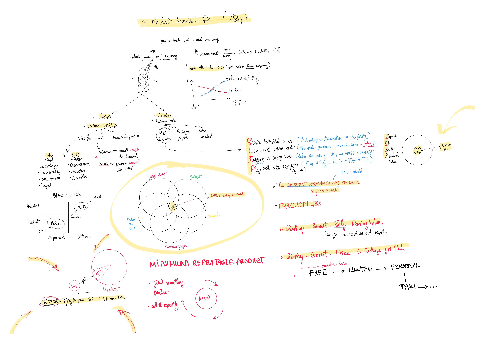

Find more at:

Summary of “How to Build a Product that Scales into a Company”
-
(00:01-01:10) The Initial Idea:
- Many startups begin with a product idea rather than market research, but scaling a product into a successful company requires a broader approach, including thinking about go-to-market strategies, pricing, and scalability from the start.
-
(01:10-02:43) Product vs. Company Gap:
- Product-Market Fit (PMF) is necessary but not sufficient to build a scalable business. PMF ensures the product addresses a need but does not guarantee success beyond initial traction.
- Companies need to bridge the “Product-Company Gap,” focusing on repeatable sales, pricing models, and customer scaling strategies.
-
(02:43-05:48) Learning from Failures and Successes:
- Example: Padient, a QR-based mobile payment company, failed to scale due to challenges in enterprise adoption despite technical success.
- Contrast: YouTube succeeded by finding a scalable model through advertising post-acquisition by Google.
-
(05:48-09:54) Scaling Expenses Flip:
- Early-stage startups focus on R&D and product development, but as they scale, expenses shift towards sales and marketing.
- Mature SaaS companies typically allocate 60% of revenue to SG&A (sales, general, and administrative) and 20% to R&D.
-
(12:26-18:32) Minimum Viable Segment (MVS):
- A key strategy for scaling is targeting a small, specific segment (MVS) within the broader market to prove repeatability and validate the product.
- Example: A healthcare hiring platform initially targeted only nurses and later expanded to broader segments.
-
(18:32-21:36) Importance of Customer Feedback:
- Conducting extensive customer interviews (e.g., 200 potential users) is critical to understanding pain points and identifying the ideal initial market segment.
-
(32:52-36:32) SLIP Framework for Easy Product Adoption:
- S: Simple to install and use
- L: Low to no initial cost
- I: Instant and ongoing value
- P: Plays well in the ecosystem
- This framework ensures products are easy to adopt, reducing friction for customers.
-
(55:40-59:48) The Role of Pricing and Partnerships:
- Pricing should evolve with the customer journey, starting with free trials or freemium models and scaling up as value increases.
- Strategic partnerships, such as Clavio with Shopify, can accelerate growth by leveraging established ecosystems.
-
(59:48-1:03:20) Strategic Partnerships for Scaling:
- Companies can collaborate with distributors, tech partners, or large players in their industry to expand reach and credibility.
-
(1:03:53-End) Final Advice:
- Always design with scalability and repeatability in mind. Validate ideas with a minimum viable segment and think about go-to-market fit and pricing strategies early on.
- Networking, feedback, and partnerships are key components of successfully scaling a product into a company.